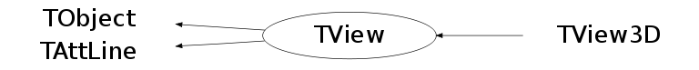

Function Members (Methods)
This is an abstract class, constructors will not be documented.
Look at the header to check for available constructors.
public:
| virtual | ~TView() |
| void | TObject::AbstractMethod(const char* method) const |
| virtual void | AdjustScales(TVirtualPad* pad = 0) |
| virtual void | TObject::AppendPad(Option_t* option = "") |
| virtual void | AxisVertex(Double_t ang, Double_t* av, Int_t& ix1, Int_t& ix2, Int_t& iy1, Int_t& iy2, Int_t& iz1, Int_t& iz2) |
| virtual void | TObject::Browse(TBrowser* b) |
| virtual void | Centered() |
| virtual void | Centered3DImages(TVirtualPad* pad = 0) |
| static TClass* | Class() |
| virtual const char* | TObject::ClassName() const |
| virtual void | TObject::Clear(Option_t* = "") |
| virtual TObject* | TObject::Clone(const char* newname = "") const |
| virtual Int_t | TObject::Compare(const TObject* obj) const |
| virtual void | TObject::Copy(TObject& object) const |
| static TView* | CreateView(Int_t system = 1, const Double_t* rmin = 0, const Double_t* rmax = 0) |
| virtual void | DefinePerspectiveView() |
| virtual void | DefineViewDirection(const Double_t* s, const Double_t* c, Double_t cosphi, Double_t sinphi, Double_t costhe, Double_t sinthe, Double_t cospsi, Double_t sinpsi, Double_t* tnorm, Double_t* tback) |
| virtual void | TObject::Delete(Option_t* option = "")MENU |
| Int_t | TAttLine::DistancetoLine(Int_t px, Int_t py, Double_t xp1, Double_t yp1, Double_t xp2, Double_t yp2) |
| virtual Int_t | TObject::DistancetoPrimitive(Int_t px, Int_t py) |
| virtual void | TObject::Draw(Option_t* option = "") |
| virtual void | TObject::DrawClass() constMENU |
| virtual TObject* | TObject::DrawClone(Option_t* option = "") constMENU |
| virtual void | DrawOutlineCube(TList* outline, Double_t* rmin, Double_t* rmax) |
| virtual void | TObject::Dump() constMENU |
| virtual void | TObject::Error(const char* method, const char* msgfmt) const |
| virtual void | TObject::Execute(const char* method, const char* params, Int_t* error = 0) |
| virtual void | TObject::Execute(TMethod* method, TObjArray* params, Int_t* error = 0) |
| virtual void | ExecuteEvent(Int_t event, Int_t px, Int_t py) |
| virtual void | ExecuteRotateView(Int_t event, Int_t px, Int_t py) |
| virtual void | TObject::Fatal(const char* method, const char* msgfmt) const |
| virtual void | FindNormal(Double_t x, Double_t y, Double_t z, Double_t& zn) |
| virtual TObject* | TObject::FindObject(const char* name) const |
| virtual TObject* | TObject::FindObject(const TObject* obj) const |
| virtual void | FindPhiSectors(Int_t iopt, Int_t& kphi, Double_t* aphi, Int_t& iphi1, Int_t& iphi2) |
| virtual void | FindScope(Double_t* scale, Double_t* center, Int_t& irep) |
| virtual void | FindThetaSectors(Int_t iopt, Double_t phi, Int_t& kth, Double_t* ath, Int_t& ith1, Int_t& ith2) |
| virtual void | Front() |
| virtual void | FrontView(TVirtualPad* pad = 0) |
| virtual Bool_t | GetAutoRange() |
| virtual Int_t | GetDistancetoAxis(Int_t axis, Int_t px, Int_t py, Double_t& ratio) |
| virtual Double_t | GetDproj() const |
| virtual Option_t* | TObject::GetDrawOption() const |
| static Long_t | TObject::GetDtorOnly() |
| virtual Double_t | GetDview() const |
| virtual Double_t | GetExtent() const |
| virtual const char* | TObject::GetIconName() const |
| virtual Double_t | GetLatitude() |
| virtual Color_t | TAttLine::GetLineColor() const |
| virtual Style_t | TAttLine::GetLineStyle() const |
| virtual Width_t | TAttLine::GetLineWidth() const |
| virtual Double_t | GetLongitude() |
| virtual const char* | TObject::GetName() const |
| virtual char* | TObject::GetObjectInfo(Int_t px, Int_t py) const |
| static Bool_t | TObject::GetObjectStat() |
| virtual Option_t* | TObject::GetOption() const |
| virtual TSeqCollection* | GetOutline() |
| virtual Double_t | GetPsi() |
| virtual void | GetRange(Float_t* min, Float_t* max) |
| virtual void | GetRange(Double_t* min, Double_t* max) |
| virtual Double_t* | GetRmax() |
| virtual Double_t* | GetRmin() |
| virtual Int_t | GetSystem() |
| virtual Double_t* | GetTback() |
| virtual const char* | TObject::GetTitle() const |
| virtual Double_t* | GetTN() |
| virtual Double_t* | GetTnorm() |
| virtual UInt_t | TObject::GetUniqueID() const |
| virtual void | GetWindow(Double_t& u0, Double_t& v0, Double_t& du, Double_t& dv) const |
| virtual Double_t | GetWindowHeight() const |
| virtual Double_t | GetWindowWidth() const |
| virtual Bool_t | TObject::HandleTimer(TTimer* timer) |
| virtual ULong_t | TObject::Hash() const |
| virtual void | TObject::Info(const char* method, const char* msgfmt) const |
| virtual Bool_t | TObject::InheritsFrom(const char* classname) const |
| virtual Bool_t | TObject::InheritsFrom(const TClass* cl) const |
| virtual void | TObject::Inspect() constMENU |
| void | TObject::InvertBit(UInt_t f) |
| virtual TClass* | IsA() const |
| virtual Bool_t | IsClippedNDC(Double_t* p) const |
| virtual Bool_t | TObject::IsEqual(const TObject* obj) const |
| virtual Bool_t | TObject::IsFolder() const |
| Bool_t | TObject::IsOnHeap() const |
| virtual Bool_t | IsPerspective() const |
| virtual Bool_t | TObject::IsSortable() const |
| virtual Bool_t | IsViewChanged() const |
| Bool_t | TObject::IsZombie() const |
| virtual void | TObject::ls(Option_t* option = "") const |
| void | TObject::MayNotUse(const char* method) const |
| virtual void | TAttLine::Modify() |
| virtual void | MoveFocus(Double_t* center, Double_t dx, Double_t dy, Double_t dz, Int_t nsteps = 10, Double_t dlong = 0, Double_t dlat = 0, Double_t dpsi = 0) |
| virtual void | MoveViewCommand(Char_t chCode, Int_t count = 1) |
| virtual void | MoveWindow(Char_t option) |
| virtual void | NDCtoWC(const Float_t* pn, Float_t* pw) |
| virtual void | NDCtoWC(const Double_t* pn, Double_t* pw) |
| virtual void | NormalWCtoNDC(const Float_t* pw, Float_t* pn) |
| virtual void | NormalWCtoNDC(const Double_t* pw, Double_t* pn) |
| virtual Bool_t | TObject::Notify() |
| void | TObject::Obsolete(const char* method, const char* asOfVers, const char* removedFromVers) const |
| static void | TObject::operator delete(void* ptr) |
| static void | TObject::operator delete(void* ptr, void* vp) |
| static void | TObject::operator delete[](void* ptr) |
| static void | TObject::operator delete[](void* ptr, void* vp) |
| void* | TObject::operator new(size_t sz) |
| void* | TObject::operator new(size_t sz, void* vp) |
| void* | TObject::operator new[](size_t sz) |
| void* | TObject::operator new[](size_t sz, void* vp) |
| TView& | operator=(const TView&) |
| virtual void | PadRange(Int_t rback) |
| virtual void | TObject::Paint(Option_t* option = "") |
| virtual void | TObject::Pop() |
| virtual void | TObject::Print(Option_t* option = "") const |
| virtual Int_t | TObject::Read(const char* name) |
| virtual void | TObject::RecursiveRemove(TObject* obj) |
| virtual void | TAttLine::ResetAttLine(Option_t* option = "") |
| void | TObject::ResetBit(UInt_t f) |
| virtual void | ResizePad() |
| virtual void | RotateView(Double_t phi, Double_t theta, TVirtualPad* pad = 0) |
| virtual void | TObject::SaveAs(const char* filename = "", Option_t* option = "") constMENU |
| virtual void | TAttLine::SaveLineAttributes(ostream& out, const char* name, Int_t coldef = 1, Int_t stydef = 1, Int_t widdef = 1) |
| virtual void | TObject::SavePrimitive(ostream& out, Option_t* option = "") |
| virtual void | SetAutoRange(Bool_t autorange = kTRUE) |
| virtual void | SetAxisNDC(const Double_t* x1, const Double_t* x2, const Double_t* y1, const Double_t* y2, const Double_t* z1, const Double_t* z2) |
| void | TObject::SetBit(UInt_t f) |
| void | TObject::SetBit(UInt_t f, Bool_t set) |
| virtual void | SetDefaultWindow() |
| virtual void | SetDproj(Double_t dproj) |
| virtual void | TObject::SetDrawOption(Option_t* option = "")MENU |
| static void | TObject::SetDtorOnly(void* obj) |
| virtual void | SetDview(Double_t dview) |
| virtual void | SetLatitude(Double_t latitude) |
| virtual void | TAttLine::SetLineAttributes()MENU |
| virtual void | TAttLine::SetLineColor(Color_t lcolor) |
| virtual void | TAttLine::SetLineStyle(Style_t lstyle) |
| virtual void | TAttLine::SetLineWidth(Width_t lwidth) |
| virtual void | SetLongitude(Double_t longitude) |
| static void | TObject::SetObjectStat(Bool_t stat) |
| virtual void | SetOutlineToCube() |
| virtual void | SetParallel() |
| virtual void | SetPerspective() |
| virtual void | SetPsi(Double_t psi) |
| virtual void | SetRange(const Double_t* min, const Double_t* max) |
| virtual void | SetRange(Double_t x0, Double_t y0, Double_t z0, Double_t x1, Double_t y1, Double_t z1, Int_t flag = 0) |
| virtual void | SetSystem(Int_t system) |
| virtual void | TObject::SetUniqueID(UInt_t uid) |
| virtual void | SetView(Double_t longitude, Double_t latitude, Double_t psi, Int_t& irep) |
| virtual void | SetViewChanged(Bool_t flag = kTRUE) |
| virtual void | SetWindow(Double_t u0, Double_t v0, Double_t du, Double_t dv) |
| virtual void | ShowAxis() |
| virtual void | ShowMembers(TMemberInspector& insp) |
| virtual void | Side() |
| virtual void | SideView(TVirtualPad* pad = 0) |
| virtual void | Streamer(TBuffer& b) |
| void | StreamerNVirtual(TBuffer& b) |
| virtual void | TObject::SysError(const char* method, const char* msgfmt) const |
| Bool_t | TObject::TestBit(UInt_t f) const |
| Int_t | TObject::TestBits(UInt_t f) const |
| virtual void | ToggleRulers(TVirtualPad* pad = 0) |
| virtual void | ToggleZoom(TVirtualPad* pad = 0) |
| virtual void | Top() |
| virtual void | TopView(TVirtualPad* pad = 0) |
| virtual void | UnZoom() |
| virtual void | UnzoomView(TVirtualPad* pad = 0, Double_t unZoomFactor = 1.25) |
| virtual void | TObject::UseCurrentStyle() |
| virtual void | TObject::Warning(const char* method, const char* msgfmt) const |
| virtual void | WCtoNDC(const Float_t* pw, Float_t* pn) |
| virtual void | WCtoNDC(const Double_t* pw, Double_t* pn) |
| virtual Int_t | TObject::Write(const char* name = 0, Int_t option = 0, Int_t bufsize = 0) |
| virtual Int_t | TObject::Write(const char* name = 0, Int_t option = 0, Int_t bufsize = 0) const |
| virtual void | Zoom() |
| virtual void | ZoomIn() |
| virtual void | ZoomMove() |
| virtual void | ZoomOut() |
| virtual void | ZoomView(TVirtualPad* pad = 0, Double_t zoomFactor = 1.25) |
protected:
| virtual void | TObject::DoError(int level, const char* location, const char* fmt, va_list va) const |
| void | TObject::MakeZombie() |
Data Members
public:
| enum TObject::EStatusBits { | kCanDelete | |
| kMustCleanup | ||
| kObjInCanvas | ||
| kIsReferenced | ||
| kHasUUID | ||
| kCannotPick | ||
| kNoContextMenu | ||
| kInvalidObject | ||
| }; | ||
| enum TObject::[unnamed] { | kIsOnHeap | |
| kNotDeleted | ||
| kZombie | ||
| kBitMask | ||
| kSingleKey | ||
| kOverwrite | ||
| kWriteDelete | ||
| }; |
protected:
| Color_t | TAttLine::fLineColor | line color |
| Style_t | TAttLine::fLineStyle | line style |
| Width_t | TAttLine::fLineWidth | line width |
Class Charts
{kind=link}
{kind=link}
{kind=link}
{kind=link}

Function documentation
TView * CreateView(Int_t system = 1, const Double_t* rmin = 0, const Double_t* rmax = 0)
Create a concrete default 3-d view via the plug-in manager
void DefinePerspectiveView()
void AxisVertex(Double_t ang, Double_t* av, Int_t& ix1, Int_t& ix2, Int_t& iy1, Int_t& iy2, Int_t& iz1, Int_t& iz2)
void DefineViewDirection(const Double_t* s, const Double_t* c, Double_t cosphi, Double_t sinphi, Double_t costhe, Double_t sinthe, Double_t cospsi, Double_t sinpsi, Double_t* tnorm, Double_t* tback)
void ExecuteEvent(Int_t event, Int_t px, Int_t py)
void ExecuteRotateView(Int_t event, Int_t px, Int_t py)
Double_t GetWindowWidth() const
Double_t GetWindowHeight() const
void FindNormal(Double_t x, Double_t y, Double_t z, Double_t& zn)
void FindThetaSectors(Int_t iopt, Double_t phi, Int_t& kth, Double_t* ath, Int_t& ith1, Int_t& ith2)
Bool_t IsClippedNDC(Double_t* p) const
Bool_t IsPerspective() const
Bool_t IsViewChanged() const
void NormalWCtoNDC(const Float_t* pw, Float_t* pn)
void NormalWCtoNDC(const Double_t* pw, Double_t* pn)
void ResizePad()
void SetAutoRange(Bool_t autorange = kTRUE)
void SetAxisNDC(const Double_t* x1, const Double_t* x2, const Double_t* y1, const Double_t* y2, const Double_t* z1, const Double_t* z2)
void SetDefaultWindow()
void SetLatitude(Double_t latitude)
void SetLongitude(Double_t longitude)
void SetOutlineToCube()
void SetParallel()
void SetPerspective()
void SetRange(Double_t x0, Double_t y0, Double_t z0, Double_t x1, Double_t y1, Double_t z1, Int_t flag = 0)
void SetViewChanged(Bool_t flag = kTRUE)
void MoveFocus(Double_t* center, Double_t dx, Double_t dy, Double_t dz, Int_t nsteps = 10, Double_t dlong = 0, Double_t dlat = 0, Double_t dpsi = 0)
--
void MoveWindow(Char_t option)
void AdjustScales(TVirtualPad* pad = 0)
void Centered3DImages(TVirtualPad* pad = 0)
void Centered()
void FrontView(TVirtualPad* pad = 0)
void Front()
void ZoomIn()
void ZoomOut()
void ZoomView(TVirtualPad* pad = 0, Double_t zoomFactor = 1.25)
void UnzoomView(TVirtualPad* pad = 0, Double_t unZoomFactor = 1.25)
void RotateView(Double_t phi, Double_t theta, TVirtualPad* pad = 0)
void SideView(TVirtualPad* pad = 0)
void Side()
void TopView(TVirtualPad* pad = 0)
void Top()
void ToggleRulers(TVirtualPad* pad = 0)
void ShowAxis()
void ToggleZoom(TVirtualPad* pad = 0)
void ZoomMove()
void Zoom()
void UnZoom()